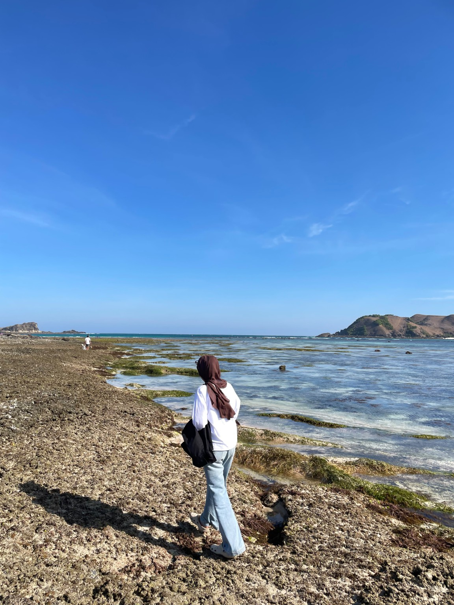
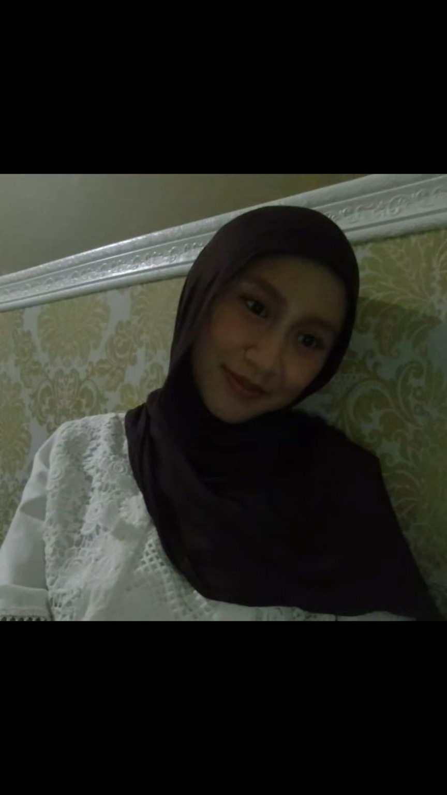

02A — HARD SKILLS
WELCOME TO MY LITTLE SPACE
Hello, I'm
Talitha.
A curious mind, a creative soul.
A student, creative enthusiast, and someone who loves exploring new things. Here, I collect stories, ideas, experiences, and little pieces of my journey.
EXPLORE MY JOURNEY ↘EXPLORE MY JOURNEY · 2026
collecting moments, not things.SCROLL TO EXPLORE SLEMAN, YOGYAKARTA
A LITTLE INTRODUCTION
Get to know
the person behind.

A little piece of me.01 — ABOUT ME
Hi! I'm Talitha Putri Wibawa.
I'm a Communication and Information Management student at STMM.
I have an interest in photography, content creation, design, and digital media. I enjoy exploring new things, gaining experiences, and expressing creativity through different projects.
Currently, I'm learning, growing, and discovering new possibilities along the way.
⌖
BASED INSleman, Yogyakarta, Indonesia
WHAT I BRING TO THE TABLE
Skills & things I do.
A growing set of skills, shaped by curiosity and practice.
02B — SOFT SKILLS
How I work & grow.
OUTSIDE THE SCREEN
Little things I love.
The small things that make my days feel meaningful.
Photography
Capturing little moments.
Watching Movies
Stories on the screen.
Exploring Coffee Shops
Finding cozy corners.
Traveling & Exploring Nature
Taking the scenic route.
Reading Books
A new world in every page.
Cooking
Making something with love.
Creative Designing
Turning ideas into visuals.
A COLLECTION OF MY WORK
03 — PORTFOLIO
Ideas become
little creations.
A collection of creative work, designs, and projects I've put together.
LET'S STAY CONNECTED
You can find me here.
Feel free to say hello or take a look at what I'm sharing.